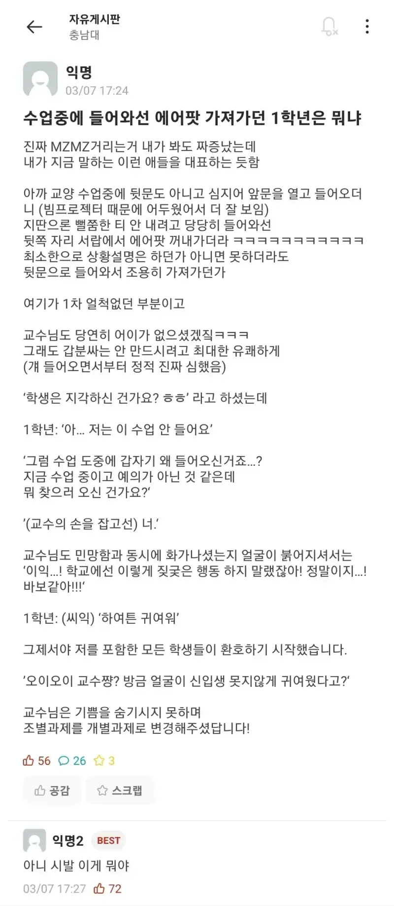

맞네... 2학기 중간고사가 10월 중~하순 이니께.. ㅋㅋㅋㅋㅋㅋㅋㅋ
글 작성일 3월 7일
그냥 개강하고 개약해진 타이밍이네ㅋㅋㅋㅋ
교수가 남성, 1학년이 여성이라고 상상하니 맛도리네요
교수는 10대 소년, 여성은 40대 중년인가보군요
아 시발 전에 봤던거였는데
시험기간에 애들 씻기고 산책도 좀 시키고 그러자
실제로 봤던거임 강의실 교단쪽 플러그에 충전기랑 패드였나 폰이었나 두고서
다음 수업때 교수님이 수업중이신데 앞문으로 들어오더니 교단 올라가서 지 물건들 챙겨서 나가더라
교수랑 키스는 안 했음????
아 시험기간 아..
경북대가 독을 풀었다!!!
시험기간인가